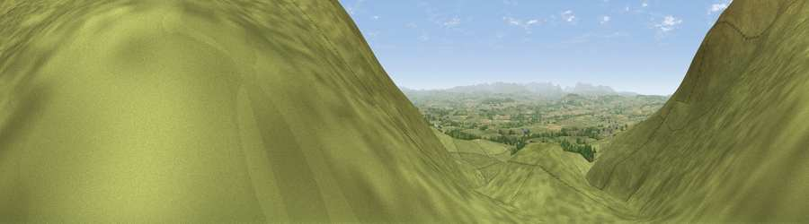

Rusby Hill
#18976 in England · top 63% of its area beats it · near OusbyThe view, rendered

A 360° render of this exact spot computed from the terrain model, tree cover and land cover — summer colours, afternoon light, calibrated against photographs of famous viewpoints. Real trees, hedges and buildings will differ in detail.
The panorama
Grey silhouette: terrain skyline in each direction (720 bearings, Earth curvature and refraction included). Dashed green: skyline with trees (+15 m) and buildings (+8 m) as obstacles. Blue strip: how far the ground is visible on each bearing.
Where the view opens
Wedge length = distance to the farthest visible ground on that bearing (vegetation-aware). Rings at 10, 25 and 50 km.
What fills the view
95% grassland · 3% cropland · 2% woodland
Angular shares of the visible panorama (visual magnitude), not map area. Landscape diversity 0.11 (0–1 Shannon).
Key numbers
More beautiful places nearby
The staircase of upgrades: each row has a higher view potential than everything closer. Driving times are estimates from straight-line distance, calibrated against real road routing — check an actual route before setting out.
| Place | Direction | Drive | Score |
|---|---|---|---|
| Viewpoint near Ousby | NNW · 1 km | ~2 min | 76.2 |
| Viewpoint near Melmerby | N · 3 km | ~8 min | 76.8 |
| Viewpoint near Melmerby | N · 4 km | ~9 min | 78.1 |
| Cross Fell | E · 4 km | ~9 min | 78.7 |
| Viewpoint near Plumpton | W · 14 km | ~25 min | 78.9 |
| Barrock Fell | NW · 22 km | ~37 min | 81.1 |
| Viewpoint near Watermillock | SW · 23 km | ~38 min | 82.6 |
| Viewpoint near Watermillock | SW · 24 km | ~39 min | 83.5 |
54.70740, -2.54696 · source: osm peak · position refined by local search. Computed location — check access rights before visiting.